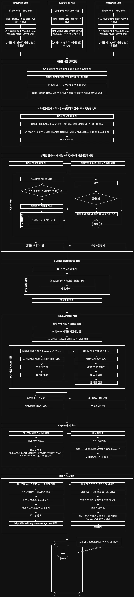

자동화 프로세스를 통한 공공정책 일일브리핑 시범 추진 결과
1. 추진개요
- (추진기간) 2025. 6. 1. ~ 2025. 9. 2. (94일간)
- (투입인원) 초급기술자(정보처리기사) 0.75인 / 행정전문가(일반행정사) 0.25인
- (활용자원) Power Automate Desktop, Microsoft Office Excel, Copilot, 티스토리
- (주요내용) 정부 부처별 보도자료를 스크래핑하여 엑셀로 DB를 구축한 후 PDF파일로 일일보고서를 작성하고 그 내용을 Copilot으로 요약하여 티스토리 블로그에 게시하는 자동화 업무 프로세스 프로토타입 구축
2. 추진과정
- 부처별 기초 데이터 구축
- 정부 보도자료 포털의 url과 부처별 관리코드를 조합하여 부처별 보도자료 url 생성
- 부처 직제순으로 편제하여 기초자료 정렬
- 웹스크래핑 DB 구축
- 스크래핑을 위한 엑셀 워크시트 및 필드 생성 과정 검토
- 검색 및 스크래핑 시나리오 작성 및 적용
- PDF 퍼블리싱
- 퍼블리싱을 고려하여 엑셀 시트에 문서 프레임 디자인
- 스크랩한 데이터의 디자인 시트 적용 및 PDF 파일 내보내기 과정 검토
- AI를 통한 자료 요약
- PDF 파일 업로드 및 업로드 된 파일 내용의 요약을 요청하는 프롬프트 연구
- 응답 결과를 클립보드에 저장하도록 하는 과정 검토
- 블로그 게시
- 티스토리 계정 로그인시 예외상황에 대한 대응 검토
- UI에 따른 제목입력, 카테고리 설정, 커버이미지 등록, 클립보드에 저장된 AI응답 결과 본문 붙여넣기, 파일업로드 과정 구성
3. 주요실적
- 티스토리 블로그 게시물 94건 티스토리 블로그 - 공공정책 일일브리핑
- 플로우차트로 제작한 업무프로세스

4. 성과 및 시사점
4.1. 총평
- 웹 스크래핑부터 블로그 게시까지 전체 과정을 하나의 데스크톱 기반 RPA 도구로 자동화 했다는데 큰 의의
- 또한 아이디어 구체화를 위해 프로세스 과정에 투입된 어플의 가능성과 한계를 테스트 함으로서, 각 어플 적용의 문제점과 개선점 도출 및 피드백을 수집할 수 있게되어, 상용 어플리케이션의 라이선스 구매 등 향후 비용 추계의 근거 자료로 활용 가능
- 다만 공공정책 자료 PDF파일 및 요약결과를 블로그로 제공하는 방법을 수행해 본 결과, 산출물의 충실성과 제공과정의 간결성이 충분하지 않아, 본 사업 추진시 정보제공 방법 재설정 필요
4.2. 웹 탐색 및 스크래핑: Tab Search → Query Parameter
- (문제점) 웹 스크래핑을 위한 검색조건 입력시 탭 탐색을 통한 날짜 입력 등 UI요소를 순차으로 접근하는 네비게이션 기반 접근 방식은, UI요소에 대한 포커스 이동 및 선택에 많은 시간이 소요
- (개선방안) 검색 대상 웹사이트의 DOM 구조 및 소스 분석이 완료되어, 프로세스 정제화 및 속도 향상을 위한 Query Parameter 접근 방식으로 변경
4.3. 데이터베이스: 엑셀 → 관계형DBMS
- (문제점) 기초 자료 및 검색 결과 저장시 Power Automate Desktop과의 상호운용성이 매우 우수한 엑셀을 활용했으나, 대용량을 처리하는 상황에서 성능저하 및 제약조건 등 데이터 무결성 관리 기능 미흡
- (개선방안) 서버형 DB가 아니더라도 대용량 데이터 처리 및 제약조건 부여 등이 가능한 관계형DB로 변경
4.4. 퍼블리싱: PDF → html + css
- (문제점) 정보제공 방식으로 PDF파일이 오프라인 배포 및 인쇄시 다른 포멧과 대비된 특장점을 보유하고 있으나, 배포용 파일의 구조적 한계로 다양한 디바이스 환경 지원 및 웹사이트와 일체된 콘텐츠 구성에 한계
- (개선방안) html + css 의 웹 네이티브 특성을 활용하여 검색엔진 최적화 및 접근성 확보
4.5. 구조화: AI 활용 → 규칙기반 분류 및 카테고리화
- (문제점) 블로그 게시물 본문에 PDF파일 내용 요약문을 표시하기 위해 AI(Copilot, ChatGPT, Perplexity)에 프롬프트로 PDF 문서를 업로드하여 중요도를 감안한 선택 및 요약 요청을 수행해 보았으나, 자료누락, 결과물의 불규칙성·비일관성, 맥락이해 부족, PDF파일 업로드 제한 등의 문제가 노출되어, 순수한 AI작업의 생성결과를 비즈니스 로직에 100% 활용하는 것은 시기상조로 판단
프롬프트 내용
업로드된 부처별 보도자료 파일 내용만을 가지고 시사성 및 시기성을 감안하여 각 부처별 중요한 자료를 5건 이내로 선택 요약 - (폐기 및 옵션화) 정보제공 형식이 PDF파일에서 웹페이지로 변경됨에 따라 AI를 활용한 자료 요약 프로세스는 폐기하되, 보조적 활용 및 인간 참여형 AI 시스템 등 옵션화 고려
- (신규대안) 규칙기반 분류 및 자동 카테고리화를 통한 자동화 과정을 통해 정보 제공의 세밀화 및 전문화 수준 향상
4.6. 플렛폼: 티스토리 → 자체 정적웹사이트
- (문제점) 카카오의 SaaS인 티스토리가 카카오의 내부 정책에 따라 로그인 절차 및 화면 구성 등이 예고없이 변경되는 경우가 있어 자동화 프로세스 설계시 예외처리 대응 및 프로세스 통제 곤란
- (개선방안) 현행 웹사이트 운영 플랫폼 변경에 따라 자제 정적 웹사이트에 적용 예정
5. 향후계획
- 2026년 1월말까지 공공정책 모니터링 정보 제공 서비스 재설계 및 구축 계획 수립 추진